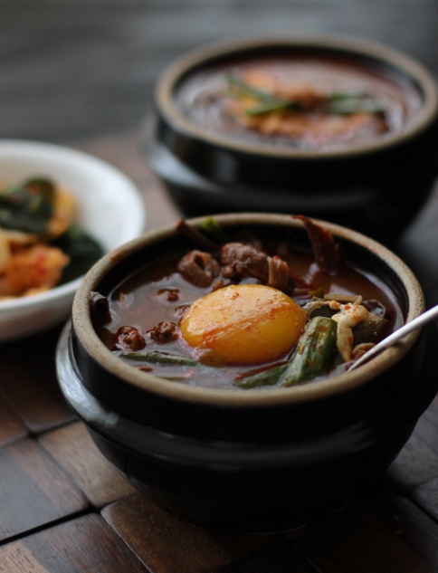
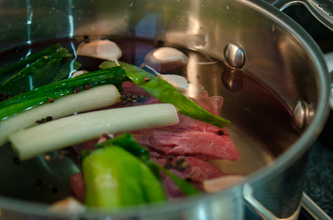
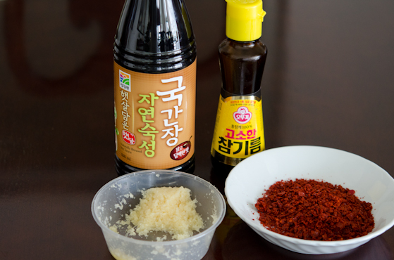
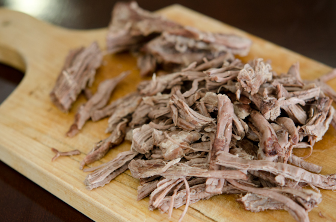

Yukgaejang




Ingredients
- 1 1/3 lb (600g) beef brisket
- 1 large onion or 1 leek sliced
- 6-7 garlic cloves
- 2 Asian leeks cut into 2" slices, each slice quartered and the core removed
- 1 daikon radish, sliced into 4-5 pieces
- 1 tablespoon black peppercorn
- 10 cups water
- 1/2 lb (200g) Korean fiddle head, re-hydrated, and well rinsed, cut into 2" slices
- 1/2 lb (250g)mung bean sprouts
- 1/2 lb (200g) oyster mushroom torn into bite size pieces
- 4 tablespoon Korean chili flakes
- 1 tablespoon sesame oil
- 5 tablespoon Korean soy sauce for soup, gookganjang
- 1 tablespoon finely minced garlic
- salt and pepper to taste
For the chili oil
- 1 tablespoon canola oil
- 1/2 tablespoon Korean chili flakes
Directions
- In a large pot combine beef, onion (or 1 leek), garlic cloves, peppercorn, radish and water. Bring to boil and simmer over low heat for 45 minutes.
Reserve the beef and the 5-6 cups of stock. Discard the rest.
- Shred the beef and set aside.
- In a pot boil water. Blanch mung bean sprouts with a little salt for 2 minutes. Using a strainer remove the sprouts from the water and rinse in a cold water, squeeze out the excess water and set aside.
Blanch the mushroom in a same manner. Set aside.
- Blanch the sliced leeks in a same manner and rinse in the cold water, drain. Set aside.
- In a large bowl combine shredded beef, fiddleheads, bean sprouts, mushrooms. Add the 4 tablespoon Korean chili flakes, sesame oil, Korean soy sauce for soup and minced garlic.
Using a hand mix them all together until all the ingredients are well mixed with the seasoning.
In a large heavy bottom pot, heat 1 tablespoon oil over low heat. Add the 1/2 tablespoon of Korean chili flakes and gently stir well. You will see the oil is changing its color to red. Becareful not to burn the chili flakes.
- Add the beef mixture and toss well with the oil. Pour the 5 cups of reserved stock in the pot. The stock should cover every ingredient in a pot. Add more stock if needed. Bring to gentle boil, cover with a lid and then simmer for 1 hour over low heat.
- Add the reserved blanched Asian leek in the pot and cook for additional 15 minutes. Season the stew with salt if needed and sprinkle lots of freshly grated pepper.
Serve hot with rice.
Shaved Ice!